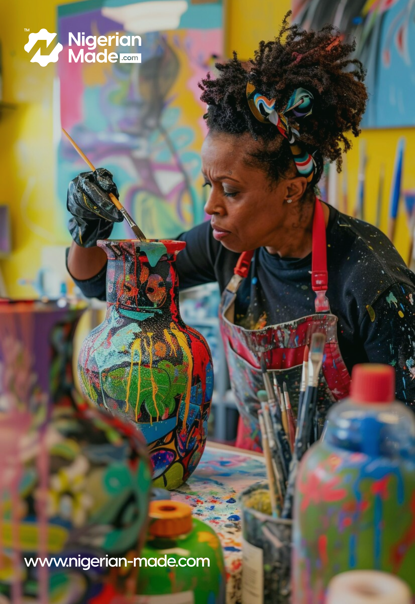
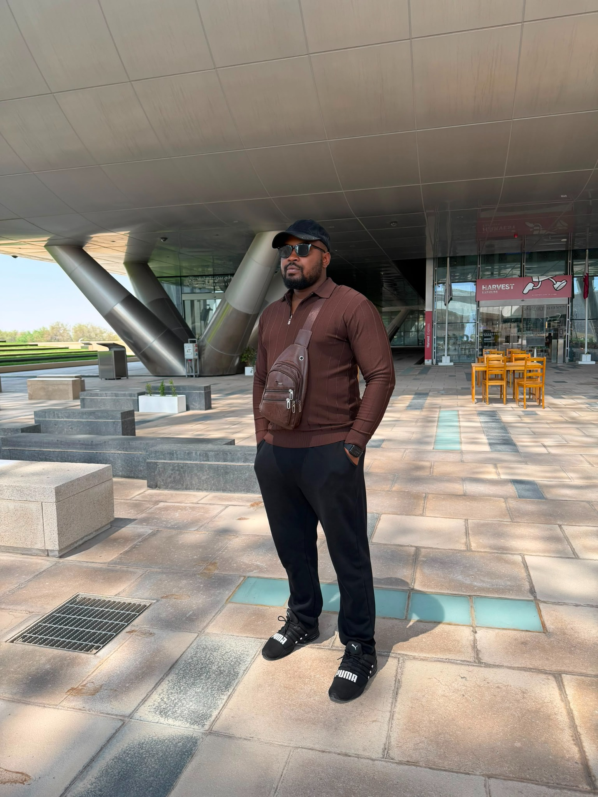

Product Design Engineer
Darlo CRM
A bilingual mobile CRM concept for property sales teams in the GCC.
I work across product design, full-stack development, applied AI, and technical project delivery.

Product Design Engineer
A bilingual mobile CRM concept for property sales teams in the GCC.
Fullstack Developer
A review workflow that turns approved purchase orders into ERP-ready CSVs.
AI Engineer
A prototype that suggests routing and sends ambiguous tickets for human review.
Project Manager
Product requirements, vendor demos, engineering coordination, and early access.
I’m Abdulmajid Abdurrahim, based in Doha, Qatar. I’ve worked across product design and technical delivery, from mapping user workflows and building applications to coordinating the teams that ship them.
I also mentor on ADPList, where I help people connect product design, front-end engineering, and career development.
Design systems, application development, API integration, and AI workflow prototyping.





A messaging operations console for synthetic payments and entity onboarding. Trace delivery, retries and rejected events, and inspect each workflow’s queue and completion target.
Finds cited IT guidance and hands unresolved questions to a human-reviewed ticket workflow.
Turns incoming enquiries into editable lead proposals and follow-up drafts, with approval before any CRM write.
Reviews purchase orders for missing units, price mismatches, stock shortages, and unmapped parts. Approved orders export as ERP-ready CSVs.
Extracts fields from English and Arabic invoice images, checks totals, and sends records to a review queue.
Routes IT requests to the right queue and flags unclear or urgent tickets for human review.
Turns website enquiries into structured leads and drafts follow-ups for review.
Extracts agreed next steps and flags actions with missing owners or deadlines.
Compares weekly metrics and drafts follow-up suggestions for the operations team.
My work brings together software, product design, IT operations, and project coordination across creative, technology, energy, and service environments.
Technical Project Manager
Technical project management for AI initiatives, connecting planning, stakeholder coordination, and delivery.
Product & Technology Lead
Requirements, UI/UX, engineering coordination, vendor demonstrations, and product communication.
Digital Product & Technical Product Lead
Connect product thinking, design, and implementation; manage briefs, stakeholder reviews, delivery milestones, and handovers.
UI/UX Designer
Shape user flows, interface layouts, and prototypes, with attention to clear interactions and consistent visual design.
System Manager
Coordinate systems support, troubleshooting, access, and the technology needed for day-to-day operations.
System Support Administrator
Support users, resolve technical issues, and maintain reliable access to workplace systems.
IT & Operation Manager
Coordinate IT support and operational workflows, including staff deployment, reporting, and issue resolution.
IT & Project Coordination
Experience spanning IT systems, contractor coordination, project documentation, permits, logistics, and management reporting.
Project Manager
Coordinate project execution, procurement, inventory, maintenance, and operational workflows.
Co-founder
Product and website design for an on-screen AI assistant in development.
PROJECT SPOTLIGHT / INDICES STUDIOS
Align the business objectives, audience, and expected outputs.
Set boundaries, assign ownership, and schedule review points.
Guide the visual direction and development of identity assets.
Track progress and resolve feedback against the agreed direction.
Organise the finished identity system and files for use.
05 / CERTIFICATIONS & LEARNING
Microsoft 365 Certified: Enterprise Administrator Expert
Microsoft · October 2026Microsoft Certified: Identity and Access Administrator Associate (SC-300)
Microsoft · 2026CBRE — Project Management Job Simulation
Forage · September 2026CCNA certification
Cisco · September 2026CCNA: Introduction to Networks
Cisco · September 2026CCNA: Switching, Routing, and Wireless Essentials
Cisco · September 2026IT Customer Support Basics
Cisco · August 2026Operating Systems Support
Cisco · August 2026IT Essentials
Cisco · April 2025Industrial IoT and Control Systems in Energy
CiscoIndustrial IoT and Control Systems in Manufacturing
CiscoNetwork Security
CiscoPython Essentials
CiscoAI Technical Practitioner Foundations
CiscoAdvanced Generative AI Skills
CiscoIntroduction to Networks and Switching, Routing, and Wireless Essentials are Cisco Networking Academy courses. The CBRE credential is a Forage job simulation.
EDUCATION
Al-Hikmah University · 2017–2020
Ahmadu Bello University · 2014–2016
As an ADPList mentor, I help people connect product design, front-end engineering, and practical career development.
Let’s connect on LinkedIn ↗Explore my ADPList mentorship ↗